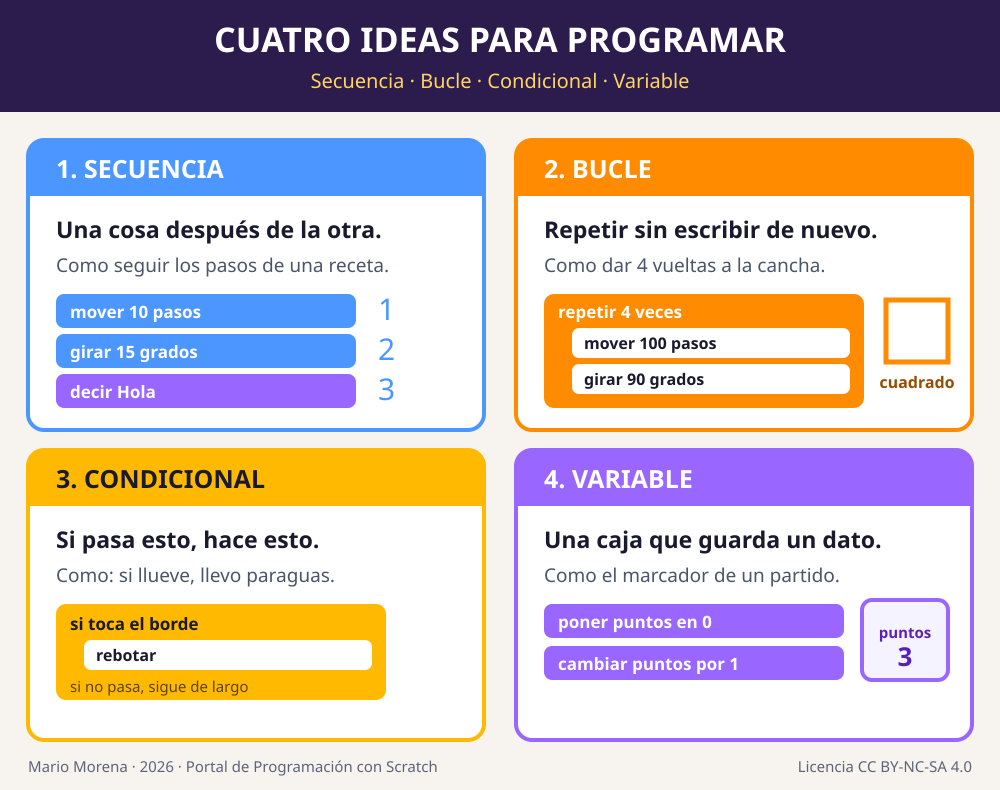

Leer la infografía en texto
1. Secuencia. Una cosa después de la otra, como seguir los pasos de una receta. Ejemplo: mover 10 pasos, después girar 15 grados, después decir Hola.
2. Bucle. Repetir sin escribir de nuevo, como dar 4 vueltas a la cancha. Ejemplo: repetir 4 veces mover 100 pasos y girar 90 grados. Resultado: dibuja un cuadrado.
3. Condicional. Si pasa esto, hace esto, como si llueve llevo paraguas. Ejemplo: si toca el borde, rebotar. Si no pasa, el programa sigue de largo.
4. Variable. Una caja que guarda un dato, como el marcador de un partido. Ejemplo: poner puntos en 0 y después cambiar puntos por 1.
Descargar en PNG · Descargar en SVG — el SVG se imprime en cualquier tamaño sin perder nitidez.


Video de apoyo
Qué es programar y cómo se parte un problema en pasos más chicos.
Ciencias de la computación: programación, parte 1. Canal Ceibal STEM. Ver en YouTube.
Créditos
La infografía es material propio, con licencia CC BY-NC-SA 4.0: se puede usar y adaptar sin fines comerciales, citando la fuente y manteniendo la misma licencia.
El video pertenece al canal Ceibal STEM y está embebido desde YouTube. Las fuentes del resto del sitio están en Acerca del sitio.